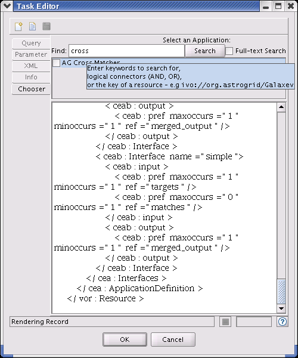

Workflow Builder: task editor

The task editor is used to insert task details into a step.
When a step is edited the task editor will appear to enable you to search the registry for a particular task, and then enter parameter values for that task.
You can save  and load
and load  task
documents to and from storage at anytime, and choosing New Tool
task
documents to and from storage at anytime, and choosing New Tool  will discard any details already entered and allow you to search for another task.
will discard any details already entered and allow you to search for another task.
Query
Parameter
Allows entry of values for parameters associated with the chosen task.
Ref?: Check this box to include a reference to a remote file - a browser will open.
Rep?: Check this box if a task allows more than one entry for a particular parameter and you wish to enter more than one value.
Del?: Check this box to remove an optional parameter from the task.
XML
Display of the task document.
Info
Details ot the selected task.
Chooser
Search for particular task. A list of tasks that fit your search criteria will be display, selecting a particular task
will display the registry entry for that task, ticking the checkbox will allow parameter values to be entered.